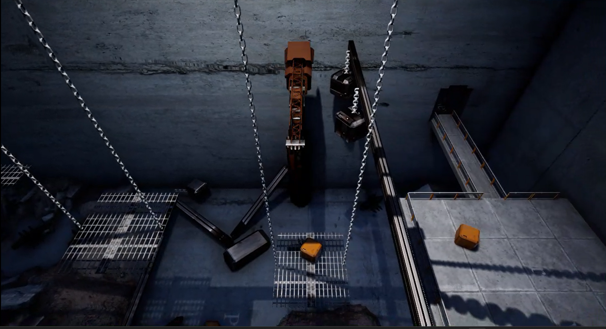

Project Rebirth is a post apocalyptic action narrative game built by a 12 person team at the CMU Game Creation Society, running on the Unreal Engine.
I joined as a gameplay programmer and a game designer. I was assigned to design and build the puzzles. I proposed a balancing puzzle where the player picks up and throws boxes onto scale platforms, shifting the balance to raise themselves up and reach new areas. This was also my first project in Unreal Engine 5, so a good part of the semester went into learning the engine's actor and component model and its C++ interface system alongside actually building the puzzle.
The puzzle is built around scale platforms arranged like a binary tree, where each platform can hold
up to two sub platforms, a left and a right. Any object that can report a weight, whether that is a
player, a box, or another platform, implements a shared IWeightProvider interface. This
keeps the platforms decoupled from the objects sitting on them: a platform never checks what type of
actor it is dealing with, it just asks for a weight.
Weight is calculated recursively rather than every frame. Unreal's overlap events trigger a recalculation only when an object enters or leaves a platform, and that new total propagates upward through the parent chain so only the path from the changed platform to the root updates, not the whole tree. The visual balancing itself comes from the weight difference between a platform's two children: the heavier side eases downward and the lighter side moves upward using clamped, interpolated movement so the motion stays smooth and physically grounded.
After the beta review, we simplified the planned showcase level to a single layer of platforms and pushed the deeper binary tree puzzles to potential later levels. To avoid spending the rest of the semester on player throw animations and physics interactions, I proposed replacing the throw mechanic with a crane the player could control directly to pick up and place boxes. This kept the core puzzle idea intact while cutting most of the animation work.
The crane is a custom Pawn rather than a Character, since it needed movement constraints a standard character controller does not support: the base moves horizontally on a plane while the magnet moves independently along the vertical axis. Before any movement happens, the system sweeps ahead of the crane base and any held object to check against world geometry, so the crane simply will not move into a spot that would clip something it is carrying. Picking an object up is a smooth pull toward an attach point with physics disabled during the pull and re-enabled the moment the object is released.
Here is a video showing both systems working together. This was the version showcased during the CMU Game Creation Society's Release Day Event.